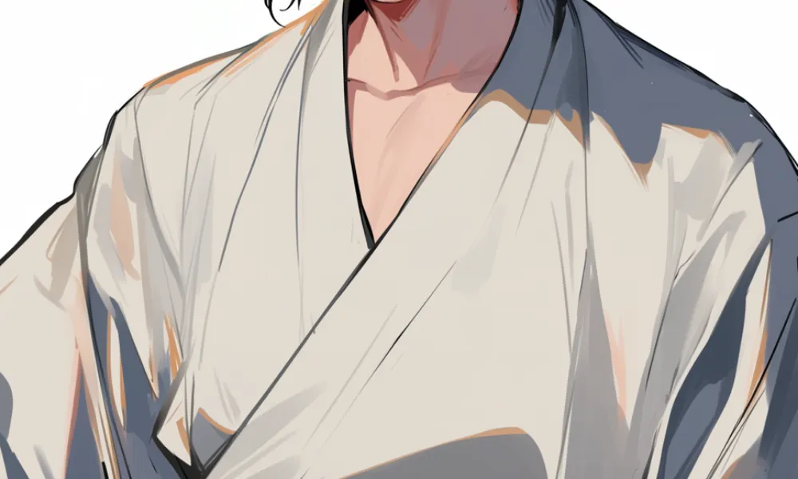

伊達政宗
飛竜乗雲
独眼竜
伊達政宗は右目に眼帯をしていて、「独眼竜」というあだ名も持っていた。
雪深い東北
伊達政宗は雪深い東北の武将で、「人取橋の戦い」も冬の雪の中で行われた。


[人物プロフィール]
生没年
1567年～1636年
時代
1567年～1636年
身分
武士

片目を失ったのは、戦いじゃなくて病気のせいだったんだ。

 伊達政宗ってどんなひと？
伊達政宗ってどんなひと？
戦国時代の武将で、仙台藩の初代藩主です。独眼竜として知られ、片目を失った後も勇敢に戦いました。政宗は、独自の文化と統治で仙台を繁栄させました。
コラム
（カード右上）物事、小事より大事は発するものなり。油断するべからず。
カードの効果解説！
人取橋の戦い
人取橋の戦いは、戦国時代に起きた戦いです。伊達政宗が敵軍を迎え撃ちました。政宗の勇敢な戦いぶりは後世に語り継がれ、彼の名は今も多くの人に知られています。
白装束
白装束は、神聖な儀式や葬儀の際に着用する白い衣装です。特に戦国時代の武将が戦場に赴く際に着ることがありました。これは、死を覚悟した決意を示すものでした。

弥生時代ってどんな時代？
弥生時代ってこんな時代 ってのをなんとなく。時代かぶってたりしたら関連人物 との繋がりについて纏める感 じで。弥生時代ってこんな時代 ってのをなんとなく。時代かぶってたりしたら関連人物 との繋がりについて纏める感 じで。


クイズ！：伊達政宗の愛称で、「独眼竜」と呼ばれる理由はなんでしょう？